1はじめに（このツールでできること）
KJM Shift＋は、お店のシフトを作るツールです。おもにこの5つができます。入力した内容はこの端末（パソコン）の中だけに自動で保存され、外部には送信されません。
- スタッフや希望休を登録する
- 部署ごとにシフトを自動で作る
- 作ったシフトを全体表で確認・修正する
- シフトを印刷する
- バックアップ（控え）を保存する
「保存」ボタンを押さなくても、入力するたびに自動で保存されます。だからこそ、まちがいもすぐ保存されます。困ったら早めに直しましょう。
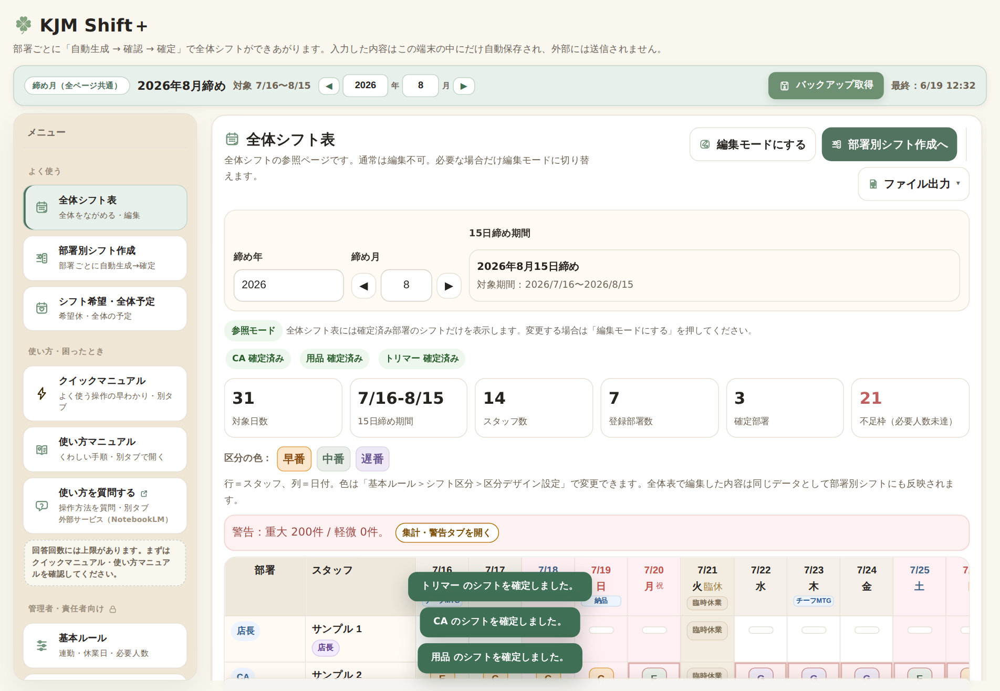
2ぜったいに守ること
わからないときは、絶対に押さない・やらないでください。
設定や作ったシフトがすべて消えて元に戻せません。わからないときは触らないでください。
今のデータがまるごと前の状態に戻り、当月だけ戻すことはできません。復元は必ず店長またはチーフ以上に確認してから。
データはこの端末の中だけに保存されます。別のパソコンでは同じデータが見えません。作業は決められた店舗PCで。
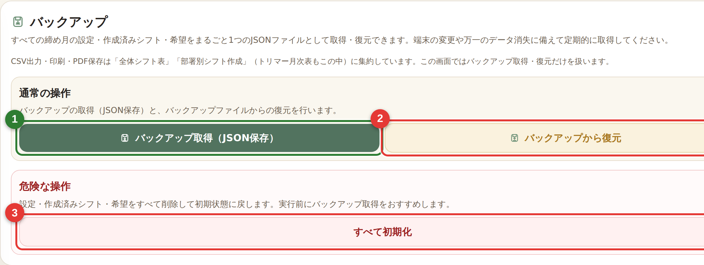
3毎月の流れ
毎月の作業は、下の手順1〜9の順に進めます。番号（緑の丸）は「作業の順番」です。各手順の〔 〕内が、そのとき使う左メニューの項目名です（下の画像で位置を確認できます）。
- 締め月を確認する〔画面上部の作業バー〕
- （必要なら）スタッフ・基本ルールを確認する〔スタッフ／基本ルール〕
- 希望休・全体予定を入れる〔シフト希望・全体予定〕
- 部署別シフトを作成する〔部署別シフト作成〕
- 警告を確認する（許容の判断はチーフ以上）〔集計・警告〕
- 問題なければ確定する〔部署別シフト作成〕
- 全体シフト表で確認する〔全体シフト表〕
- 印刷する〔全体シフト表 →ファイル出力〕
- バックアップを取る〔バックアップ〕
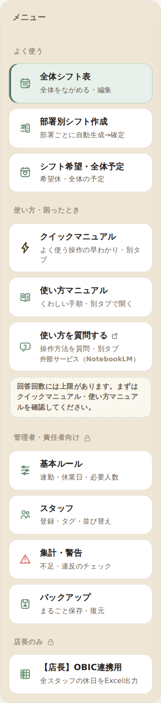
4締め月の見方
このツールは「15日締め」です。作業の前に、画面の締め月が正しいか必ず確認します。
- 8月度のシフト → 7月16日 〜 8月15日
- 9月度のシフト → 8月16日 〜 9月15日
画面上部の作業バーにある締め月の ◀ ▶ で月を変えます。ここを変えると全部の画面が同じ月に切り替わります（作業バーはどの画面でも上に出ています）。

5画面の見方（左メニュー）
左のメニューで画面を切り替えます。メニューは「よく使う」「使い方・困ったとき」「管理者・責任者向け（鍵マーク）」「店長のみ（鍵マーク）」の4つに分かれています。鍵マークの付いたグループは、おもにチーフ以上・店長が使う設定です。締め月とバックアップ取得は、メニューではなく画面上部の作業バーにあります。それぞれの役割はこちらです。
よく使う
- 全体シフト表：全員のシフトをまとめて見る・直す
- 部署別シフト作成：部署ごとに自動で作って確定する
- シフト希望・全体予定：希望休や店舗予定を入れる
使い方・困ったとき
- クイックマニュアル：よく使う操作の早わかり（別タブ）
- 使い方マニュアル：このくわしい説明ページ（別タブ）
- 使い方を質問する：操作方法を質問できる外部サービス（NotebookLM・別タブ）
管理者・責任者向け（鍵マーク・おもにチーフ以上）
- 基本ルール：連勤・必要人数・シフト区分・区分デザインなどの前提
- スタッフ：スタッフの登録・変更
- 集計・警告：不足や違反のチェック
- バックアップ：控えの保存・復元
店長のみ（鍵マーク）
- 【店長】OBIC連携用：店長専用
6スタッフを登録・変更する
「スタッフ」画面で登録・変更します。追加や退職者の削除は、各部署のチーフ以上も行えます。一覧は社員番号の昇順で並びます。
- 左メニューの「スタッフ」を押す
- 「この部署にスタッフを追加」を押す（または既存スタッフのカードを押すと編集できます）
- 姓・名、姓のよみ・名のよみ、社員番号（5桁）を入れる
- 必要に応じてタグ・対応できる部署・固定公休などを設定する
- 「追加」を押す（編集中は「編集を終える」）
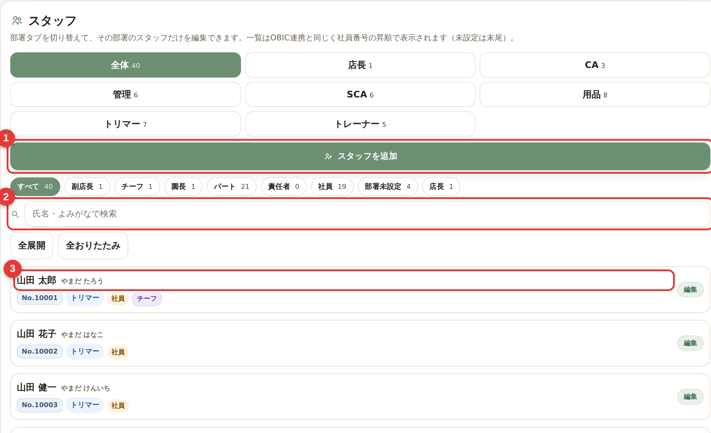
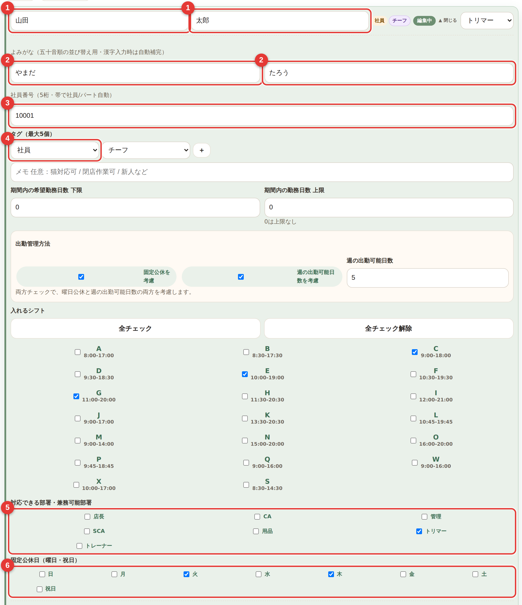
スタッフを追加・削除したら、必ずバックアップを取りましょう（→ 16章「バックアップ」）。
7基本ルールの設定（おもにチーフ以上）
自動生成の「前提」を決める画面です。ここがズレていると警告が増えます。上の「共通ルール／部署別ルール」タブで切り替えます。
- 共通ルール：最大連勤、試行回数、全体の最低人数、定休日、スタッフタグ一覧、定期予定（毎月くり返す予定。毎月／各月、日付は1〜31日・月末から選べます）、シフト区分（区分名・時間帯・早中遅の割り当てを編集する「シフト区分を編集」と、色などをまとめて変える「区分デザイン設定」）
- 部署別ルール：部署ごとの必要人数（早・中・遅／平日・土日祝）、朝そうじタグの除外設定
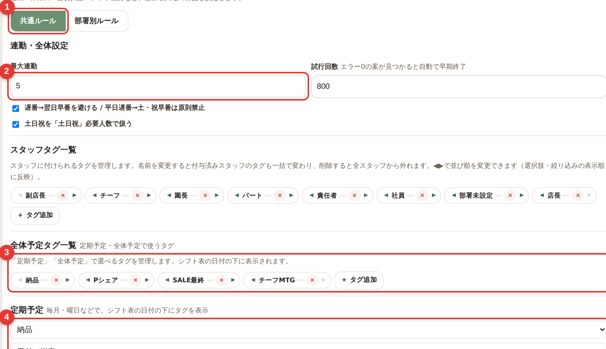
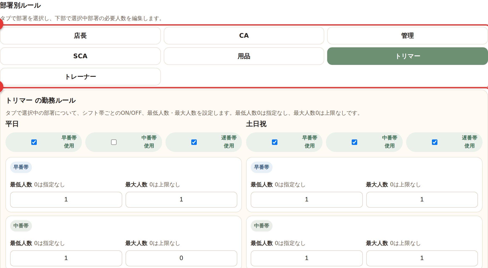
「共通ルール」のシフト区分には、見出しを押すと開く2つの設定があります。
①「シフト区分を編集」…区分（C・Eなど）の名前・時間帯・平日/土日祝の早中遅の割り当てを変更できます。
②「区分デザイン設定」…早番・中番・遅番・休・有休・その他の6グループごとに、背景・文字・枠の色や太枠を設定します。同じグループの区分すべてにまとめて反映されます（初期値は早番＝オレンジ、休＝グレー）。色は全体シフト表・部署別シフト・印刷/PDFに反映され、「全グループを既定に戻す」で初期状態に戻せます。
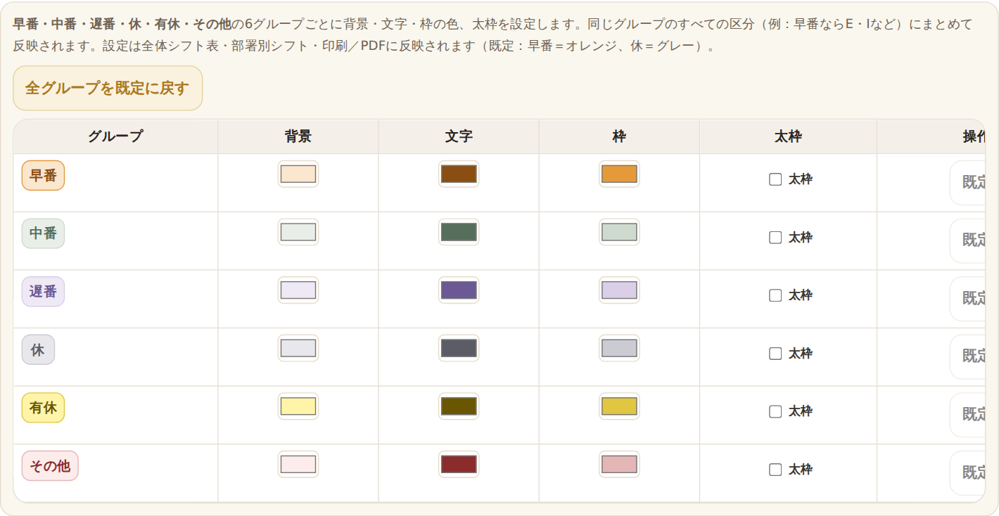
早番の勤務には、自動で「朝そうじ」の印が付きます（シフト表のマスの下に小さく表示。印刷時は文字で出ます）。日付ごとの合計行にも「朝そうじ」の人数が出ます。特定の曜日や全体予定の日に付けたくない部署は、「部署別ルール」→「朝そうじタグの除外設定」で条件を登録します（希望休と同じく、条件を組み立てて「＋ ルール追加」。登録がなければ早番すべてに付きます）。個別のマスでの付け外しは、マスを左クリックしたメニューの「朝そうじをつける／外す」でできます（→ 12章）。
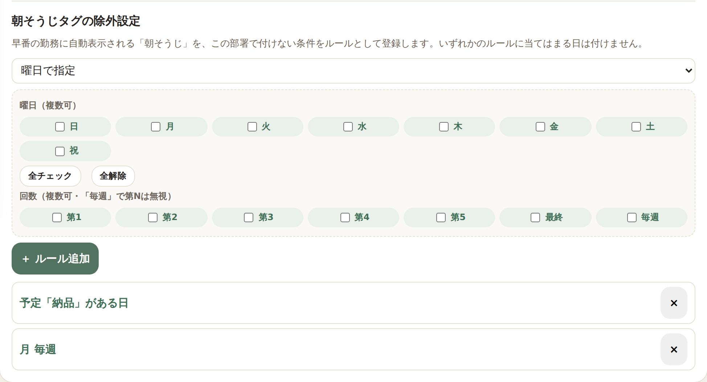
全体予定や定期予定に「チーフMTG」タグを入れた日は、「チーフ」「園長」タグの付いたスタッフ（その日出勤する場合）を、自動でなるべく遅番に寄せます。これは強制ではなく弱い希望で、必要人数などが優先されます。なお「チーフ」「園長」「チーフMTG」のタグ名は変えないでください（変えるとこのしくみが効かなくなります）。
必要人数の変更はチーフ以上に確認してから。むやみに変えると警告や不足が増えます。
8希望休・全体予定を入れる
「シフト希望・全体予定」画面です。上に「シフト希望」と「全体予定」の2つのタブがあります。
シフト希望（個人の希望休など）
- 「シフト希望」タブを選ぶ
- 「表示する部署」を選ぶ
- 個人の名前タブを押す（「全体」は見るだけで追加できません）
- 条件（日付など）と希望（休／有休／早・中・遅など）を選ぶ
- 「＋ このスタッフに追加」を押す（「保存」ボタンはありません。1件ずつ追加します）

休みたい日も勤務できない日も、希望で「休」を選んで追加します。
全体予定（お店全体の予定）

全体予定タグは、シフト表の日付ヘッダーに出ます。全体シフト表の編集モードや編集できる部署別シフト表では、タグ横のごみ箱で消せます（確認モーダルが出ます）。毎月くり返す定期予定のタグは「この日だけ削除」で、その日だけ非表示にできます（定期予定そのものは残ります）。個別に非表示にした予定は「全体予定」タブの一覧で確認でき、「元に戻す」で戻せます。
9臨時休業（店舗の休み）
お店を臨時で休む日を設定できます。「シフト希望・全体予定」の「表示する部署」で「店舗」を選びます。
- 「表示する部署」で「店舗」を選ぶ
- 休業にする日を押して切り替える
臨時休業にすると、その日は全スタッフが休み扱いになり、全体シフト表・部署別シフト表・OBIC連携用の表（ツール内の出力用画面）にも反映されます。OBICシステムへ自動で送られるわけではありません。設定前にチーフ以上に確認してください。
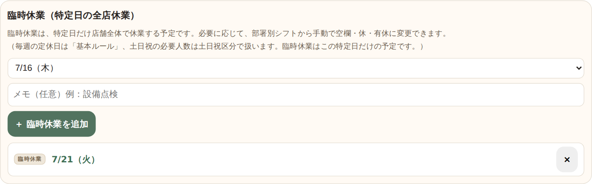
10部署別シフトを作る
部署ごとに、シフトを自動で作ります。
- 左メニューの「部署別シフト作成」を押す
- 作る部署のカードを押して選ぶ
- 締め月が正しいか確認する
- 「この部署だけ自動生成」を押す
- 出てきたシフトと警告を確認する
- 問題なければ「確定」を押す
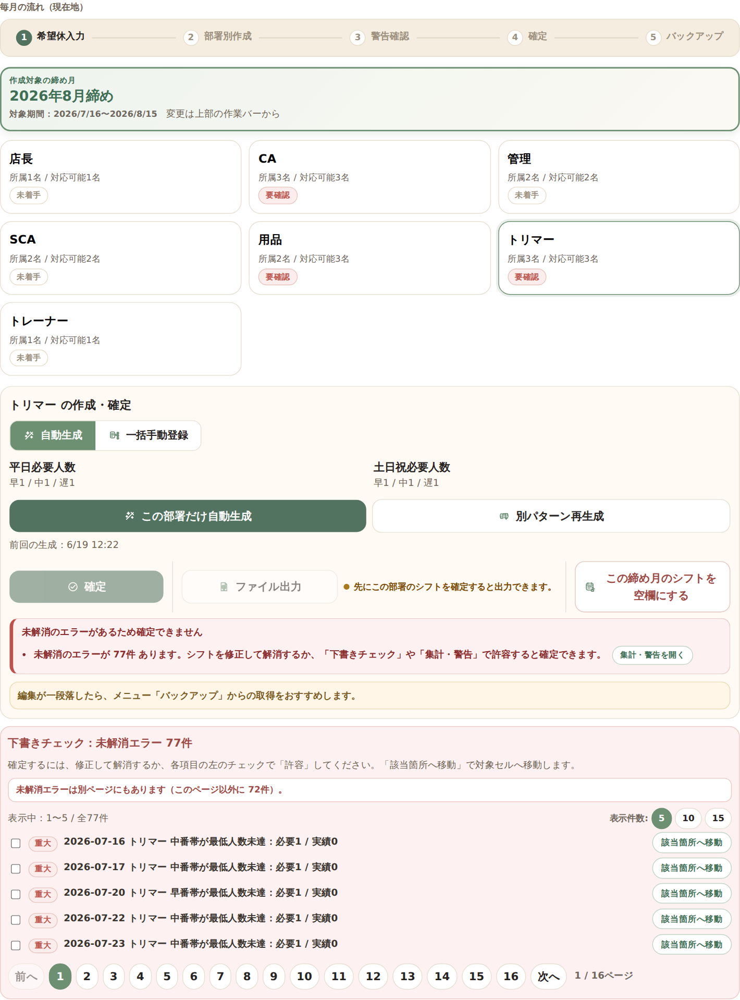
確定すると全体表に反映され、そのセルは編集できなくなります。一度確定すると同じボタンが「再編集」に変わり、押せばやり直せます（取り消せます）。兼務スタッフは、所属・兼務先のうちどれか1つの部署が確定された時点で、その人のシフトは全部署で編集できなくなります（直すときは、確定した側を「再編集」に戻します）。
「重大」な警告が残っていると確定できません（「注意」だけなら確定できます）。なお「重大」は、確定ボタンの下や確定時のメッセージでは「エラー」と表示されます。内容を確認し、許容してよいかはチーフ以上が判断します（→ 13章「警告を確認する」）。
11自動生成の便利な機能
作り直したいときに使えます。むずかしければ、まずは「自動生成」と「確定」だけで大丈夫です。
- 別パターン再生成：同じ条件で別の案を作る
- 生成を中止：作成中に止める（変更は反映されません）
- 前案に戻す／前案と比較：作り直す前の案に戻したり、見比べたりできる
- この締め月のシフトを空欄にする：その部署のこの月を白紙に戻す
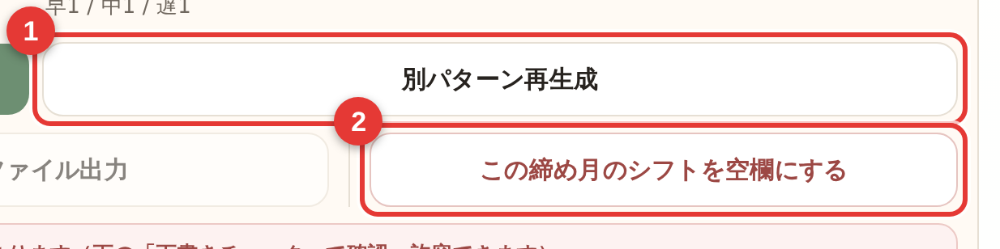
手で一気に入れたいとき（一括手動登録）
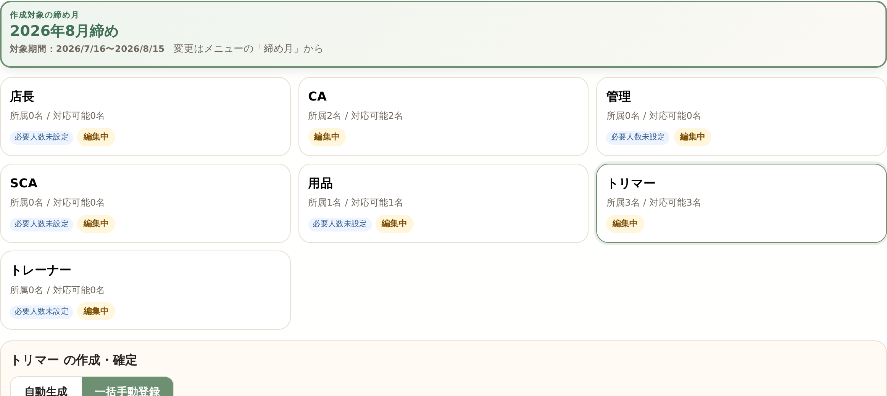
12部署別シフトを直す（編集）
自動生成したシフトは、「部署別シフト作成」の確認表の上で直接直せます。ふだんの修正はこの方法がおすすめです（全体シフト表へ移動する必要はありません）。直すのは確定する前。確定後に直したいときは、いったん「再編集」に戻します（→ 10章「部署別シフトを作る」）。
- 「部署別シフト作成」で部署を選び、下の確認表を見る
- 直したいマスを左クリックして、「休／有休／シフト区分（C・E・Gなど）／空欄にする」から選ぶ
- 右クリックすると、すべてのシフト区分の一覧から選べます（左クリックはそのスタッフのよく使う区分のみ）

- Shiftを押しながらクリック／ドラッグで複数のマスを四角く選び、右クリックでまとめて変更できます。
- まちがえたら Ctrl＋Z（元に戻す）。確認表の上の 「↩ 元に戻す／↪ やり直す」 でも戻せます。
全体シフト表からも編集できますが、ふだんは部署別シフト作成から直すのがおすすめです（全体シフト表については → 14章）。
修正したら、必ずバックアップを取りましょう（→ 16章「バックアップ」）。
13警告を確認する（許容の判断はチーフ以上）
「集計・警告」画面で、スタッフ別の回数と、不足・連勤・希望未達などの警告を確認できます。警告は「重大」と「注意」に分かれます。「重大」は部署の確定をブロックします（確定ボタンの下や確定時のメッセージでは「エラー」と表示）。「注意」は確定をブロックしません（残す場合も内容は必ず確認してください）。
- 人数が足りない／連勤が多い／希望休が反映できていない／早番・遅番が足りない など
警告の一覧で各行のチェックを付けると「許容（OKとする）」になります（確認ダイアログが出ます）。これを判断するのはチーフ以上です。一般スタッフだけで決めないでください。各警告の右の「該当箇所へ移動」を押すと、その警告のセルへ移動して印が付くので、どこが問題か分かります。まだ許容していない重大なエラー（未解消エラー）が残っていると確定できません。許容した項目は「許容済み」として緑で表示され、件数には数えません。迷ったら確定せずチーフ以上へ。許容は「集計・警告」画面でも、部署別シフト作成の「下書きチェック」でもできます。
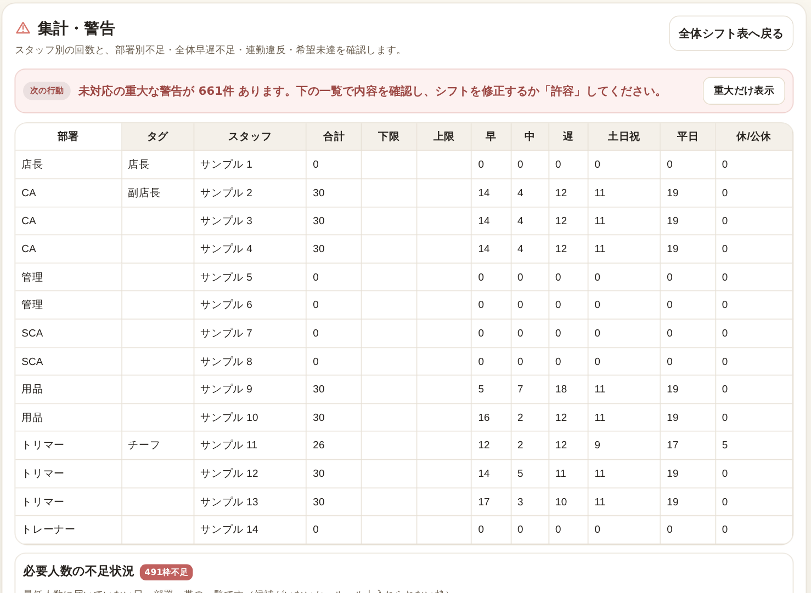
14全体シフト表を見る・直す
全員のシフトをまとめて見られる画面です。ふだんは見るだけです。
シフトの修正は、基本的に 12章「部署別シフトを直す（編集）」（部署別シフト作成の確認表で直接）で行うのがおすすめです。全体シフト表からも直せますが、全体を見比べながら直したいときなどに使います。どちらの場合も、編集の前にチーフ以上へ確認しましょう。
全体シフト表で直すときは、まず「編集モードにする」を押します（押すと「参照モードに戻す」に変わります）。そのあと：
- マスを左クリックすると、よく使う区分のメニューが開きます（空欄／休／有休／各区分。勤務日は「朝そうじ」の切替も）
- マスを右クリックすると、すべての区分の一覧から選べます
- Shiftを押しながらドラッグ／クリックで、四角く複数選択→右クリック（または左クリック）でまとめて変更
- まちがえたら Ctrl＋Z（元に戻す）。表の上の「↩ 元に戻す／↪ やり直す」でもできます
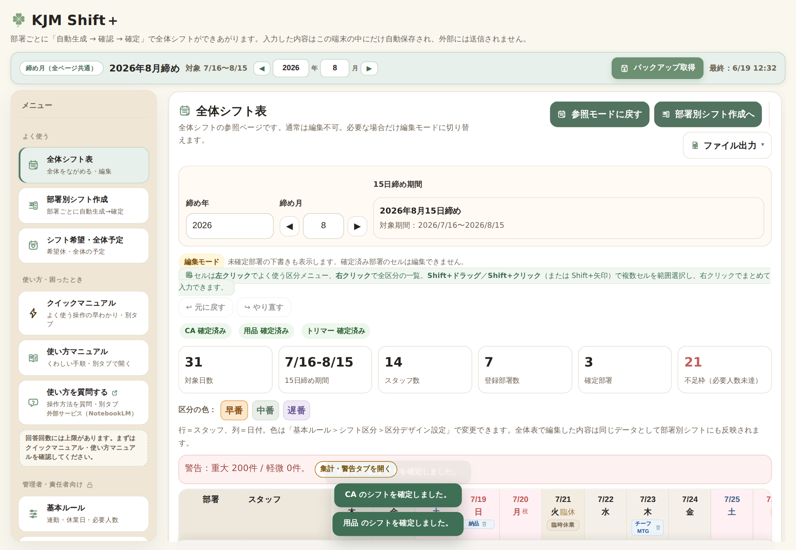
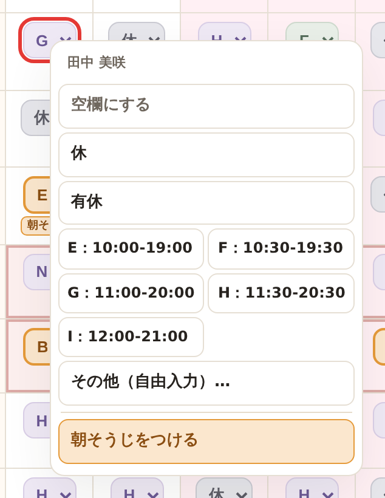
確定済み部署のスタッフのマスは編集できません（直すには、その部署を「再編集」に戻します）。兼務スタッフは、所属・兼務先のうちどれか1つの部署が確定されていると、全部署のマスが編集できなくなります。
修正したら、必ずバックアップを取りましょう（→ 16章「バックアップ」）。なお「元に戻す」が効くのはシフト表の編集だけです。希望休やスタッフの追加・初期化・復元は戻せません。
15印刷・ファイル出力
できあがったシフトを紙に出したり、ファイルに出したりできます。印刷は一般スタッフでもできます。
- 「全体シフト表」（または「部署別シフト作成」）を開く
- 締め月と内容を確認する
- 「ファイル出力」を1回クリックして開く
- 「印刷/PDF」を押す（CSV出力・Excel出力もここ）
- 印刷画面でプリンターを選び、印刷する

- 締め月は正しいですか？
- 必要な部署は全部「確定」していますか？
- へんな場所に空欄はありませんか？
- 警告は確認済みですか？／チーフ以上の確認は終わっていますか？
16バックアップを取る
作業した人が、毎回バックアップ（控え）を取ります。保存する場所はここです。
保存先 → デスクトップの「KJM Shift＋バックアップ」フォルダ
ふだんの取得は、画面上部の作業バーの「バックアップ取得」がいちばん早いです（どの画面からでも押せます）。シフトを直したあとは、作業バーが「編集後のバックアップ未取得」（やわらかい注意色）になります。取得すると「最終：◯/◯ ◯◯:◯◯」に変わります。保存先のフォルダを選びたいとき・復元や初期化は、左メニューの「バックアップ」画面を使います。
- 画面上部の作業バー、または左メニューの「バックアップ」画面で「バックアップ取得（JSON保存）」を押す
- 保存先を選ぶ画面が出たら、「KJM Shift＋バックアップ」フォルダを選んで「保存」を押す（下の画像）

- データはこの端末の中だけ。控えはこのバックアップだけが頼りです。
- ファイル名は基本そのまま（いつの控えか分からなくなるため）。
- 保存先を選ぶ画面が出ず、自動で「ダウンロード」フォルダに入る場合は、そのファイルを「KJM Shift＋バックアップ」フォルダへ移してください。
17復元するとき（チーフ以上）
復元すると、今のデータが全期間まるごと前の状態に上書きされます。当月だけ戻すことはできません。必ず店長またはチーフ以上に確認してください。
復元してよいのは、こんなときだけです。
- データが消えた
- 大きく間違えて戻せない
- 店長またはチーフ以上から指示があった
- 本当に復元が必要ですか？
- 復元するファイルは正しいですか？
- 今のデータのバックアップは取りましたか？
- チーフ以上に確認しましたか？
18トリマー月次表・サロンドワン連携
トリマーを選ぶと、「部署別シフト作成」の下に1日〜月末のひと月分の表が出ます（見るだけ。直すときは部署別シフト作成（15日締め）の確認表から → 12章）。年・月を選んで、印刷やファイル出力（CSV）ができます。トリマーは、このCSVをサロンドワンへ取り込みます。
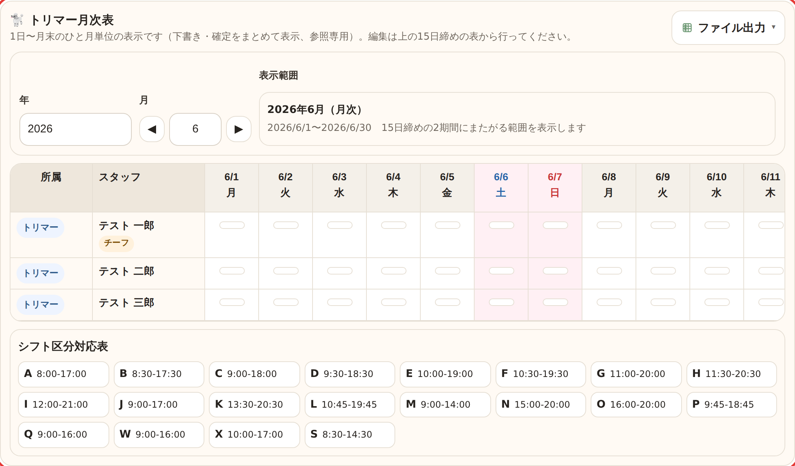
月次表は「1日〜月末」のカレンダー1か月分を表示しますが、自動生成は「15日締め（16日〜翌月15日）」単位です。そのため月次表の1か月は2つの締め月にまたがり（前半と後半で別の締め月）、片方の締め月しか作成していないと月次表は半分しか埋まりません。CSV出力の前に、表の全日（1日〜月末）が埋まっているか必ず確認してください。
例：月次表で 6月（6/1〜6/30） を出すには、前半 6/1〜6/15 を含む 6月度（5/16〜6/15） と、後半 6/16〜6/30 を含む 7月度（6/16〜7/15） の両方を作成済みにしておく必要があります（片方だけだと前半か後半が空欄になります）。
月次表の年・月は、画面上部の作業バーの締め月（◀ ▶）とは別に、この月次表で個別に選びます。締め月を変えても、月次表は自動では切り替わりません。
サロンドワンへの取り込み手順
取り込む前に、10章のとおりトリマーのシフトを作って「確定」しておきます。
- トリマー月次表の年・月を、取り込みたい月に合わせる
- 右上の「ファイル出力」を1回押して開き、「CSV出力」を選んでCSVを保存する（ふつうはブラウザの「ダウンロード」フォルダに入ります。16章のバックアップ用フォルダとは別です。場所を覚えておきます）
- サロンドワンで、手順1と同じ月のシフト表ページを開く
- ブックマークバーの「サロンドワン_シフト自動入力」を実行する
- 手順2で保存したCSVファイルを選ぶ
- 反映する
- 自動入力された内容（人数・公休の位置・対象月）を確認する
- 問題なければ保存する

ツールで出力した月と、サロンドワンで開くシフト表の月が同じであることを必ず確認してください。ちがう月だと反映されません。
手順3〜8はサロンドワンでの操作です（別アプリのため、このマニュアルには画面写真がありません）。サロンドワンの画面に従って進めてください。
19OBIC連携用（店長のみ）
店長以外は触らないでください。氏名・社員番号を含むため、取り扱いに注意します。
全スタッフの休日（公休・希望休・有休）を、社員番号の昇順で並べた「OBICへ取り込むための一覧」を作る画面です（ツール内の出力用の表で、OBICへ自動送信はされません）。休み（公休・希望休・有休）の日に「休日」、出勤（勤務シフト。その他を含む）の日は空欄で出力されます（臨時休業日も休み扱い）。コピーまたはExcel出力したものを、店長がOBIC側に貼り付け／取り込みます。対象の締め月は「全体シフト表」で選んだ月です。
- 「コピー」を押す（休日/空欄をExcelと同じ形でコピー）→ OBICのシフト表に貼り付け
- または「Excel出力」でファイルに保存
- 貼り付け後、ツールの「対象スタッフ 合計○名」とOBIC側の行数・氏名の並びが合っているか必ず照合する
コピー/貼り付けの前に、合計の横に赤い「社員番号 未設定 ○名」が出ていないか必ず確認してください。社員番号が未設定のスタッフは並びの末尾に入り、貼り付け時に全員の行が1行ずれる原因になります。出ている場合は、先に「スタッフ」画面で社員番号を入れてから貼り付けます。「部署未設定」のスタッフはそもそも対象外です（部署を割り当てると対象になります）。
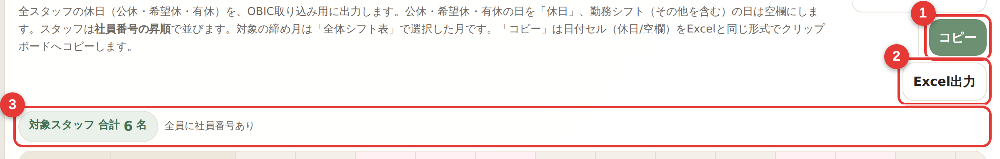
Excel出力した休日一覧は氏名・社員番号を含みます。共有フォルダ・メール添付・USB持ち出しは避け、OBIC取り込み後は端末内の所定の場所で管理してください（不要になったら削除）。
20困ったとき
一度ページを更新（ブラウザの再読込）してください。なお、更新するとシフト表の「元に戻す」履歴は消えます。直らないときは担当者へ。
別の端末で開いていないか確認してください。データは端末ごとに違うことがあります。
すぐに作業を止めて、チーフ以上に伝えてください。勝手に復元や初期化をしないでください。
プリンターが選ばれているか確認。だめなら PDF 保存、またはチーフ以上へ。
これらは社員番号・部署から自動で付くタグです。手では変えられません（部署や社員番号を直すと変わります）。
21作業後チェックリスト
作業が終わったら、最後に確認してください。
- 締め月は正しい
- 希望休・全体予定を入れた
- 部署別シフトを作成した
- 警告を確認した（許容はチーフ以上）
- 必要な部署を確定した
- 全体シフト表を確認した
- 印刷した
- バックアップを取り、保存フォルダに入れた
1) 初期化しない 2) 勝手に復元しない 3) 作業したらバックアップ